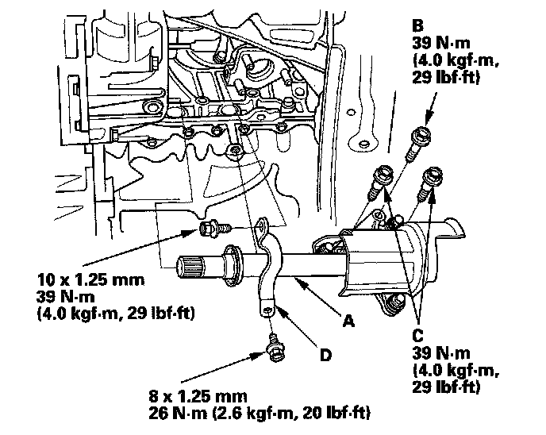

Intermediate Shaft Installation
Intermediate Shaft Installation1. Use solvent or brake cleaner to thoroughly clean the areas where the intermediate shaft (A) contacts the transmission (differential) and dry with compressed air. Insert the intermediate shaft assembly into the differential. Hold the intermediate shaft horizontally to prevent damage to the differential oil seal.

2. Install the flange bolt (B) two dowel bolts (C) and exhaust pipe bracket (D).
3. Install the exhaust pipe A.
4. Install the right driveshaft.
5. Refill the transmission with recommended fluid.